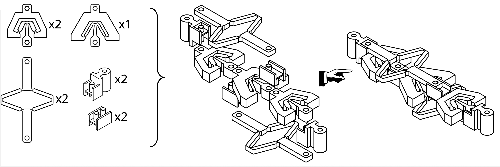
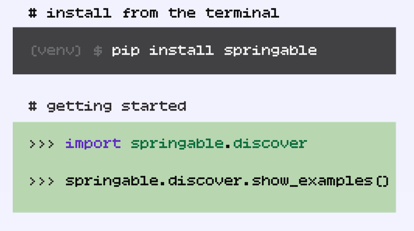
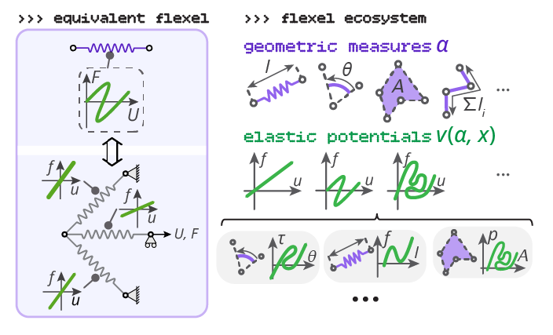
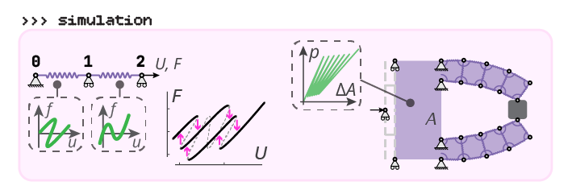

Building a countersnapping structure
All design files can be downloaded as STL by clicking here.
The countersnapping structure is composed of five building blocks assembled by four connectors, two inner ones and two outer ones. The building blocks are of three types, that I called 'softening', 'stiffening' and 'non-monotonic' respectively. To make the structure we need two softening blocks, two stiffening blocks and one non-monotonic block. 
To manufacture the building blocks, we can either cast them in silicone rubber using injection molding (recommended for better results), or directly 3d-print them in a soft TPU (might require a bit more tinkering to make the mechanism work).
After downloading the zip archive containing the STL files, go to the 'molds' folder if you want to use injection molding, or to the 'parts' folder if you want to use 3d-printing. You will then see 'nominal' and 'variations' design files. Start with the nominal design files. Fabricate 1 non-monotonic block, 2 stiffening blocks and 2 softening blocks. In addition, 3d-print 2 inner connectors and 2 outer connectors (long or short version, as you prefer). The STL design files for the connectors are in the 'connectors' folder of the zip archive. Next, assemble the blocks together as shown above. This might be a slightly challenging puzzle. Pay attention to the orientation of the connectors.
Next, stretch the mechanism by pulling on the outer connectors. If you observe a sudden reconfiguration (where the non-monotonic block quickly 'opens') and you feel that the mechanism wants to shrink by pulling suddenly more, you have just successfully designed a countersnapping structure!
If you do not observe a relatively sudden reconfiguration (where the non-monotonic block quickly 'opens'), you will have to use the variations files of type 'a0' for the softening and the stiffening blocks. Start by only replacing the softening blocks and test the mechanism. If no reconfiguration, replace the stiffening blocks too. If still not working, use the variations files of type 'a1'. If still not working, try re-fabricating some non-monotonic blocks and experiment with those.
If you do observe a sudden reconfiguration, but you feel that the tension drops, then you might just have a regular snapping structure. In that case, you will have to use the variation files of type 'b0' for the softening and the stiffening blocks. Start by only replacing the softening blocks and test the mechanism. If the tension still drops, replace the stiffening blocks too. If still not working, use the variations files of type 'b1'. If still not working, try re-fabricating some non-monotonic blocks and experiment with those.
Which material: silicone rubber or TPU?
Because silicone is almost perfectly elastic (that is, low energy dissipation or 'bouncy'), the tensile response of a building block made out of silicone remains constant upon multiple loading and unloading cycles. Inversely, because TPU is visco-elastic (that is, high energy dissipation or 'slow to deform'), a building block made out of TPU will have different tensile responses upon loading and unloading (hysteresis) and will get softer over multiple loading cycles. Therefore, silicone building blocks will lead to a more consistent and repeatable countersnapping response compared to TPU ones.
Simulating structures composed of 'flexels'
Documentation on how to get started (and more) is available here. The toolkit is implemented in Python, but little programming knowledge is required. Writing a single text file, and copy-pasting a two-line script is enough to get started and even simulate complex systems. Nice plots and simulations are automatically generated by default. No need to tinker anything to get started! It is free and open source.
I have developed this framework to simulate how nonlinear structures deform under forces. Unlike most simulation tools, the framework embraces mechanical instabilities, with a custom solver that captures the mechanical reponses beyond buckling and snapping instabilities, bringing useful insight into the world of complex mechanics. It can simulate snapping sequences (such as the popping sequence you hear when you pull on the corrugated segment of a straw), symmetry-breaking bue to buckling (such as a beam in compression that suddenly chooses to bend on one side), contact and self-contact, pressure-driven system, cable-driven systems, and much more!
try the toolkit yourself and get started
The toolkit is free and open source. It is easy to install, and a lot of examples are provided to get started smoothly. You can simply follow the installation instructions here. The toolkit is implemented in Python, but no Python knowledge is necessary. You can go to the main toolkit website for the user guide and other useful info: paulducarme.com/springable
Already familiar with Python?
Then, you should be able to get started quickly with "pip" and the "discover" module 
You can try online without any installation
You don't want to install it right now? No problem, you can try the online version here without any installation.
concept and theory
The framework is based on 'flexels', energy-storing entities that generalize the concept of 'spring'. A flexel can be a longitudinal spring (to model extension or compression), an angular spring (to model bending), a fluid (to model pressure or vacuum actuation), a flexible line (to model systems with cables, belt and pulleys), and more.  In addition, the individual mechanical behavior of a flexel can be prescribed to have any deformation curve. For example, a longitudinal flexel with non-monotonic force-displacement curve models a snapping building block. An angular flexel with a multi-valued torque-angular displacement curve singlehandedly models the snapping response of a tape-spring flexure. A fluid flexel with a multi-valued pressure-volume curve models a metafluid by itself, which is usually simulated by coupling many lower-level elements! A countersnapping structure can be modeled by one flexel with a multi-valued, self-intersecting force-extension curve. 
In essence, a single flexel can capture the mechanical behaviors of a large variety of mechanical structures, from simple linear springs to multi-valued hysteretic systems. Flexels with that wide range of complexity can be assembled together to model simple or even more complex structures, allowing to explore the interplay of geometry and intrinsic nonlinearities in mechanics.